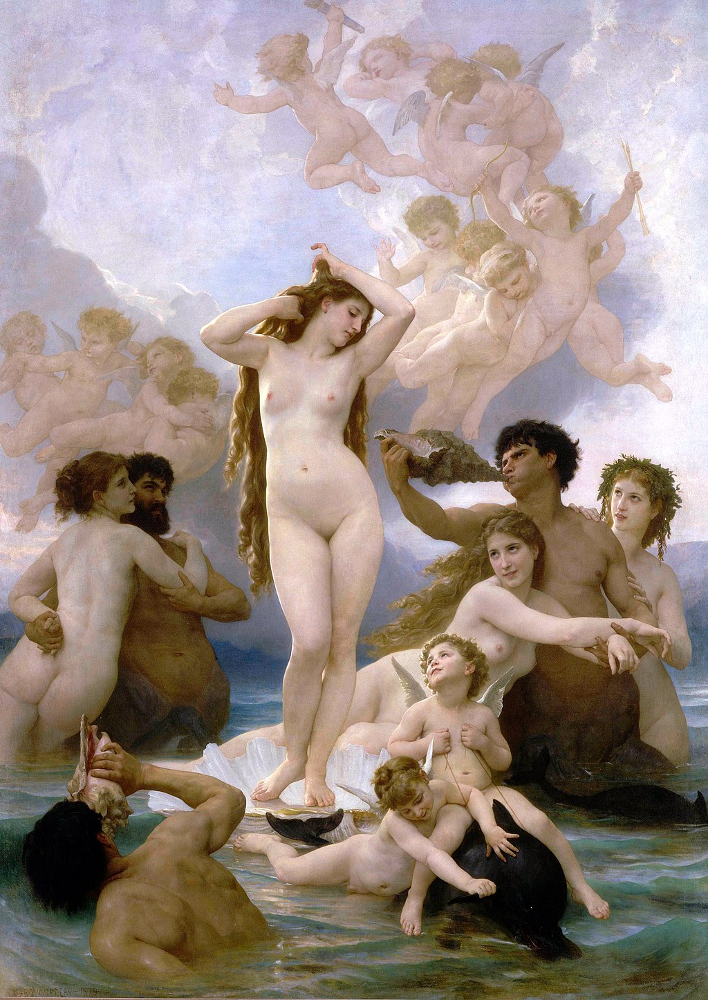
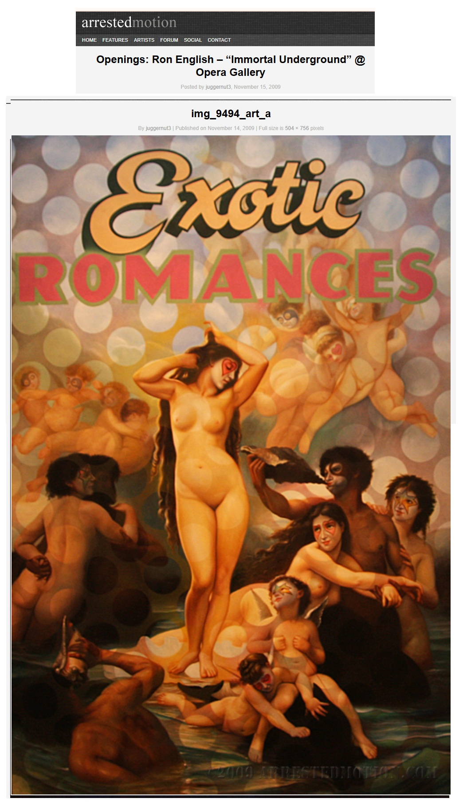

Exhibitions
Immortal Underground, Opera Gallery, New York, New York, US, November 2009.
Literature
Ron English, Status Factory: The Art of Ron English (San Francisco: Last Gasp of San Francisco, 2014), p. 89. ISBN 978-0867197891.

Provenance
Private collection.
Notes
This work references William-Adolphe Bouguereau’s The Birth of Venus.
Ancillary Documentation



